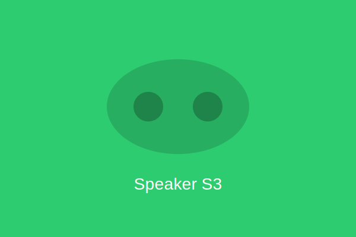

ポータブルBluetoothスピーカー S3
¥19,800（税込）
IP67防水・防塵対応で、アウトドアやバスルームでも安心して使える高音質スピーカー。 360度サウンド設計により、どの方向からも均一な音質を実現。 最大20時間の連続再生が可能で、パワーバンク機能も搭載。 2台接続でステレオサウンドも楽しめます。
カタログをダウンロード製品仕様
| 出力 | 20W（10W x 2） |
| 再生周波数帯域 | 60Hz - 20kHz |
| バッテリー持続時間 | 最大20時間 |
| 防水・防塵 | IP67 |
| サイズ | 180 x 75 x 75mm |
| 重量 | 560g |